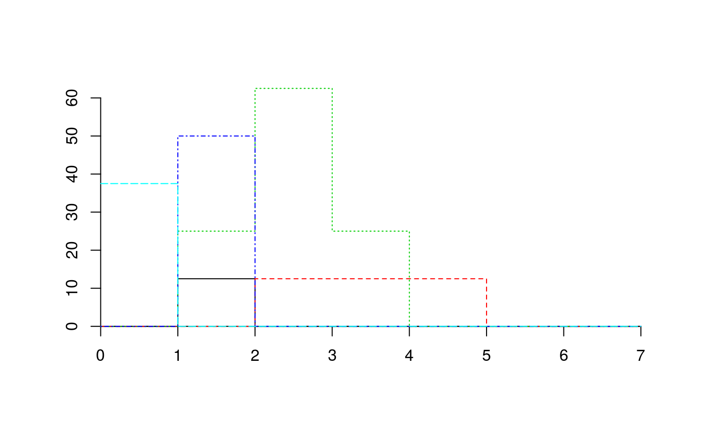
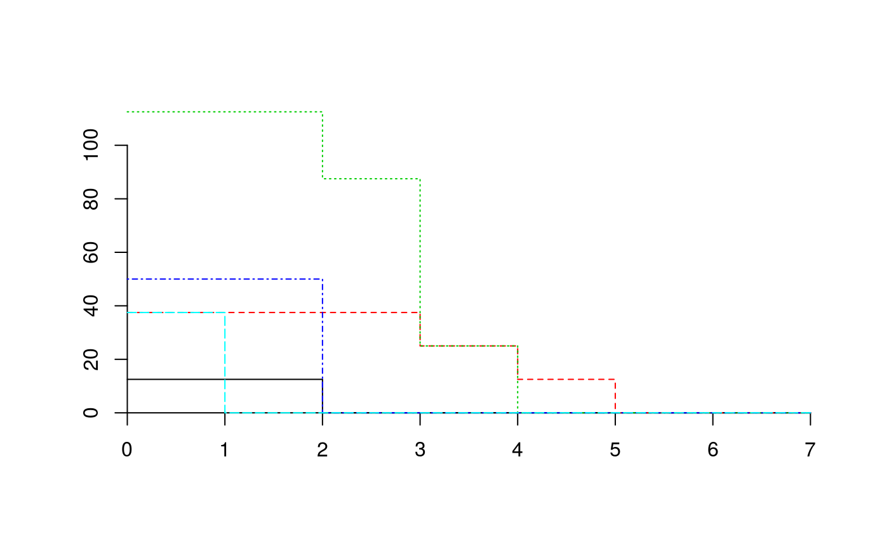

plot.CAP.RdCreate plots used to inspect one or more cumulative abundance profiles.
# S3 method for CAP plot(x, sizes=NULL, species=NULL, plots=NULL, switchAxes=FALSE, add=FALSE, drawAxes = TRUE, xlab="", ylab="", type="s",...) # S3 method for stratifiedvegdata plot(x, sizes=NULL, species=NULL, plots=NULL, switchAxes=FALSE, add=FALSE, drawAxes = TRUE, xlab="", ylab="", type="s",...)
| x | An object returned from function |
|---|---|
| sizes | A vector containing the size values associated to each size class. If |
| species | A vector of strings indicating the species whose profile is to be drawn. If |
| plots | A vector indicating the plot records whose profile is to be drawn. Can be a |
| switchAxes | A flag indicating whether ordinate and abscissa axes should be interchanged. |
| add | A flag indicating whether profiles should be drawn on top of current drawing area. If |
| drawAxes | A flag indicating whether axes should be drawn. |
| xlab | String label for the x axis. |
| ylab | String label for the y axis. |
| type | Type of plot to be drawn ("p" for points, "l" for lines, "s" for steps, ...). |
| ... | Additional plotting parameters. |
De Cáceres, M., Legendre, P. & He, F. (2013) Dissimilarity measurements and the size structure of ecological communities. Methods in Ecology and Evolution 4: 1167-1177.
Miquel De Cáceres, Forest Science Center of Catalonia
#> [1] "stratifiedvegdata" "list"## Create cumulative abundance profile (CAP) for each plot medreg.CAP = CAP(medreg) ## Draw the stratified data and profile corresponding to the third plot plot(medreg, plots="3")## Look at the plot and CAP of the same plot medreg[["3"]]#> 1 2 3 4 5 6 7 #> Pine trees 0.0 12.5 0.0 0.0 0.0 0 0 #> Quercus trees 0.0 0.0 12.5 12.5 12.5 0 0 #> Tall shrubs and small trees 0.0 25.0 62.5 25.0 0.0 0 0 #> Scrubs and small shrubs 0.0 50.0 0.0 0.0 0.0 0 0 #> Grass 37.5 0.0 0.0 0.0 0.0 0 0medreg.CAP[["3"]]#> 1 2 3 4 5 6 7 #> Pine trees 12.5 12.5 0.0 0 0.0 0 0 #> Quercus trees 37.5 37.5 37.5 25 12.5 0 0 #> Tall shrubs and small trees 112.5 112.5 87.5 25 0.0 0 0 #> Scrubs and small shrubs 50.0 50.0 0.0 0 0.0 0 0 #> Grass 37.5 0.0 0.0 0 0.0 0 0